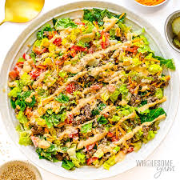

Home
Big Mac Salad

Description
Salad that includes seasoned ground beef, iceburg lettuce, pickles, cheese, Big Mac Sauce, and anything else you would like to add, peppers or tomatoes etc.
Ingredients
- Ground beef
- Chopped Iceburg lettuce
- Shredded Cheddar
- Diced Pickles
- Mayonaise
- Mustard
- White Vinegar
- Smoked or regular Paprika
- Oil
Instructions
- Combine mayonaise, diced pickles, mustard, white vinegar, and smoked paprika in a bowl.
- Blend until smooth, and add a little milk if the dressing is too thick.
- Heat a skillet over medium-high heat with a little oil
- Add the ground beef and brown and crumble it until cooked through.
- Season the beef with seasonings of your choice.
- Drain any excess grease.
- Let the beef cool slightly.
- In a large salad bowl, combine the chopped iceberg lettuce, diced tomatoes, shredded cheddar cheese, and diced dill pickles.
- Add the cooled ground beef to the salad.
- Drizzle the prepared Big Mac dressing generously over the salad.